Студия перманентного макияжа и камуфляжа
Камуфляж шрамов, растяжек и реконструкция ареол в Ростове-на-Дону
Подбираю пигмент под цвет вашей кожи, чтобы шрам или растяжка перестали бросаться в глаза. Восстанавливаю ареолы после мастэктомии и операций на груди. Пришлите фото, назову цену
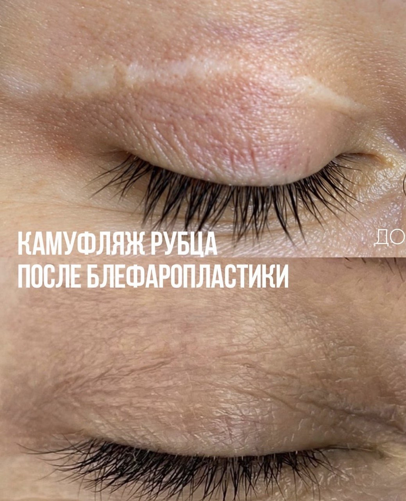
Камуфляж шрамов и растяжек
Представьте, что шрам или растяжка - это небольшая неровность на полотне вашей кожи. Камуфляж в этом случае работает как деликатная художественная ретушь: я не стираю дефект полностью (рубцовая ткань остаётся), но аккуратно «подкрашиваю» его, подбирая оттенок, который идеально сливается с окружающим тоном. Задача - смягчить цветовой контраст, чтобы дефект перестал бросаться в глаза и кожа выглядела более однородной.
Как это выглядит на практике? Я не беру готовый «телесный» цвет из палетки, а внимательно изучаю ваш фототип, подтон кожи (тёплый, холодный, нейтральный) и смешиваю несколько пигментов, чтобы добиться максимально точного совпадения. Затем с помощью оборудования и одноразовых картриджей пигмент вводится в верхние слои кожи. Чтобы переход был плавным, могу использовать разные техники: точечную (для неглубоких изменений), послойное заполнение или растушёвку, которая мягко «растворяет» границы дефекта. Иногда для лучшего результата нужен не один, а несколько сеансов с небольшими перерывами.
Растяжки (стрии)
По сути, это тоже рубцовая ткань, только появляется она из-за чрезмерного натяжения кожи (после беременности, резкого набора или потери веса). Визуально они часто выглядят как полосы, цвет которых отличается от окружающей кожи. И здесь камуфляж работает похожим образом: пигмент помогает сгладить цветовой контраст, делая стрии менее заметными ❤️
Важное уточнение: камуфляж работает в первую очередь с цветом, а не с рельефом. Если шрам выпуклый, втянутый или имеет выраженную текстуру, одной только пигментации может быть недостаточно. В таких случаях имеет смысл сначала поработать с текстурой (например, с помощью лазера или инъекций), а уже потом маскировать цвет. Также процедуру обычно рассматривают только для зрелых, полностью заживших участков. Если рубец красный, воспалённый, зудит или продолжает расти, сначала нужно обратиться к врачу (дерматологу или хирургу), чтобы стабилизировать состояние ткани
Мои работы
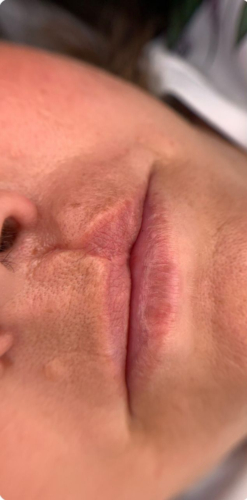
до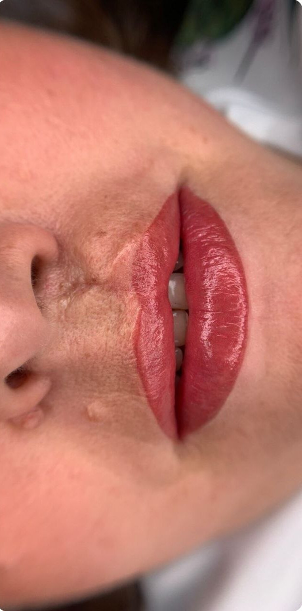
сразу послеКлиентка пришла с рубцом на верхней губе после травмы. В технике камуфляжа я закрасила рубец под цвет кожи, работала разными оттенками, так как наша кожа имеет рисунок
Растяжки
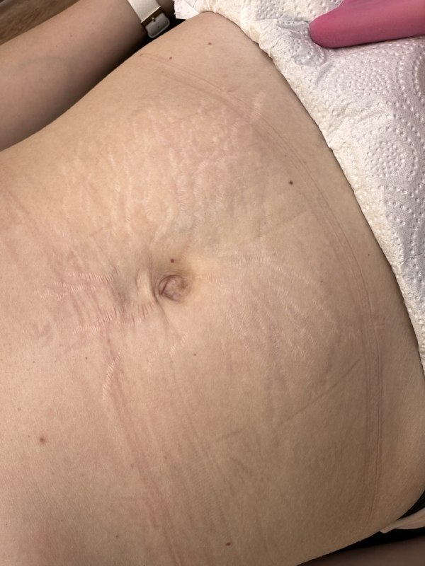
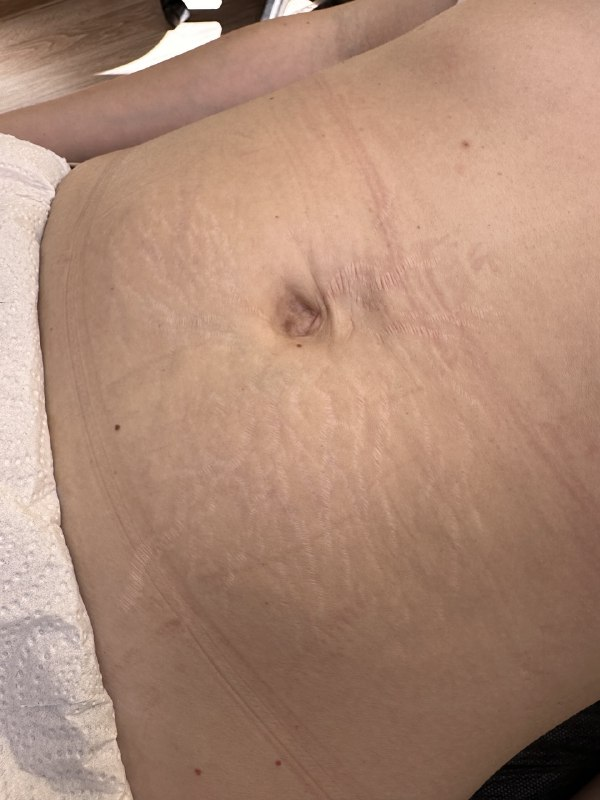
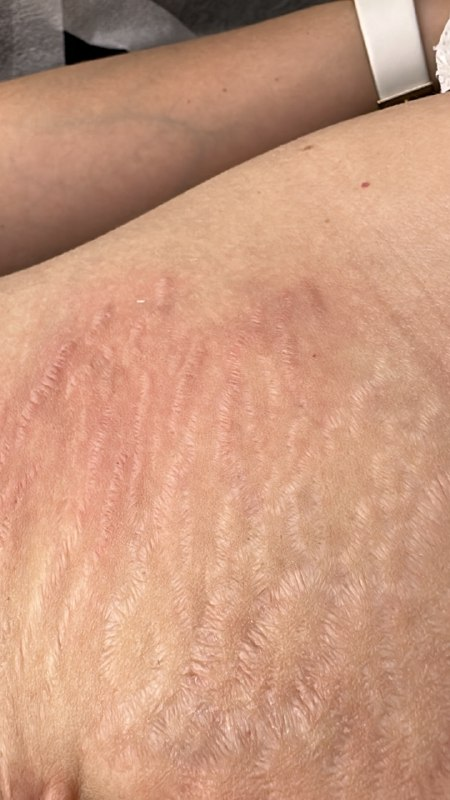
Реконструкция ареол
После мастэктомии и реконструкции груди восстановлены форма и объём, но часто не хватает самого «завершающего элемента»: соска и ареолы. Хирурги называют их восстановление последним этапом всей реконструкции. И именно камуфляж, татуаж, часто становится той точкой, после которой женщина говорит: «Это снова я»
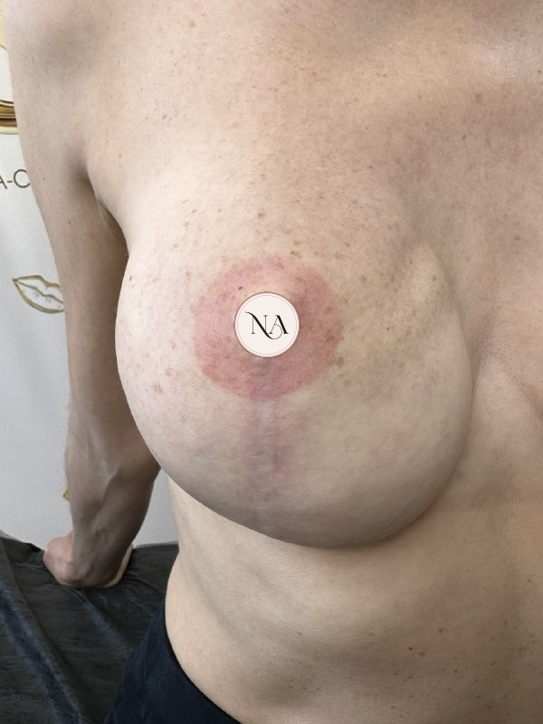
до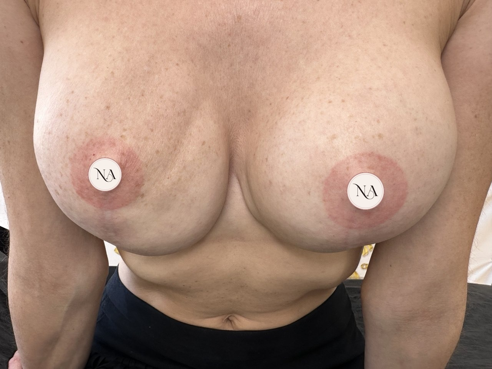
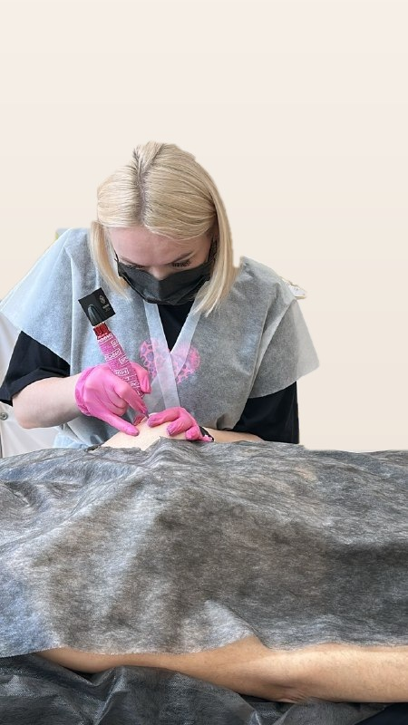
процедура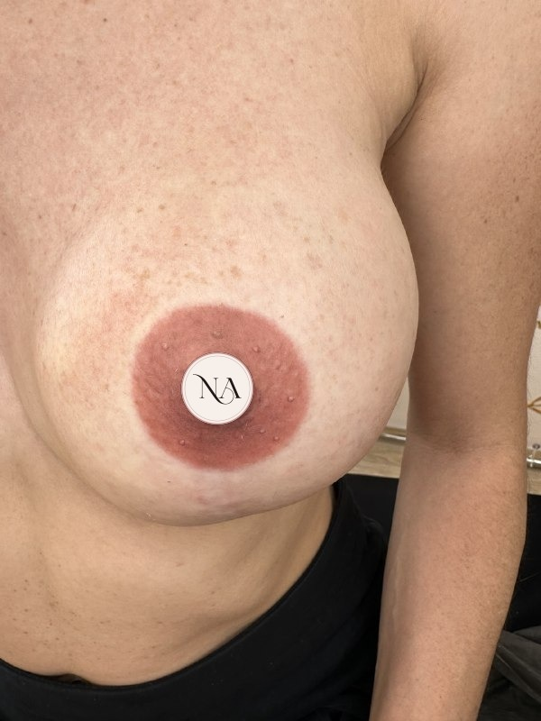
после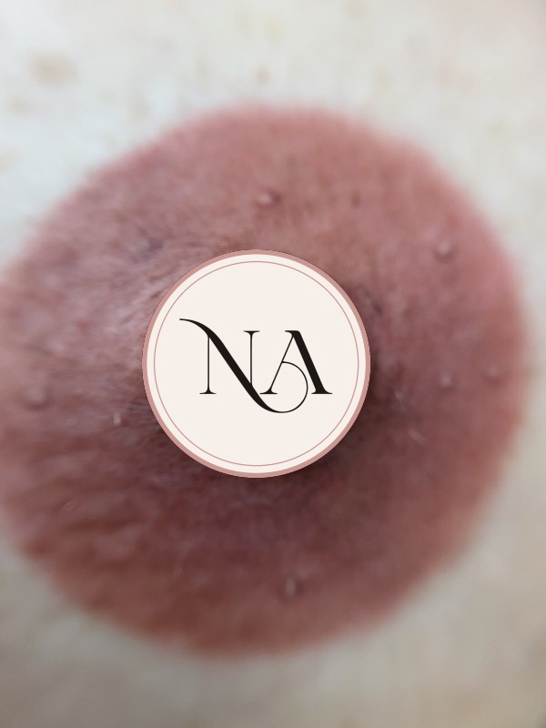
Когда необходим камуфляж ареол
После операций на груди
- После мастэктомии и реконструкции грудиСамый частый случай. Полностью «рисую» сосково-ареолярный комплекс заново, включая 3D-имитацию соска, если он был утрачен
- После маммопластикиУвеличения, уменьшения, подтяжки. Если имплант ставили через разрез по краю ареолы или вокруг неё остался рубец, пигментом его маскируют и выравнивают контур
- Шрамы и рубцыПосле любых вмешательств на груди, а также после ожогов и травм
Природные и возрастные причины
- Врождённые особенностиАреола отсутствует полностью или частично, сильно асимметрична, имеет нечёткий или «неправильный» контур
- Асимметрия после беременности и кормленияАреолы растянулись, изменили форму или цвет, одна заметно отличается от другой
- Побледнение и изменение цветаПосле лактации, гормональных сбоев, с возрастом цвет становится блёклым, синюшным, границы размываются
Как «рисуют» объём из ничего
Фишка технологии в том, что результат трёхмерен на вид, но плоский на ощупь, как обычная татуировка. Объём создаётся чистой оптикой, принципом «свет - тень». Цвет подбирают по палитре из розовых, бежевых, коричневых и лиловых пигментов. Если вторая грудь своя, оттенок и размер подгоняют точно под неё. Пробник цвета наносят прямо на кожу и смотрят, как он ведёт себя при разном освещении
Как проходит процедура
В целом, для многих женщин камуфляж ареол - это не просто «исправление дефекта», а важный шаг к тому, чтобы снова чувствовать себя уверенно и гармонично в своём теле
Цена
Камуфляж шрамов и растяжек
Реконструкция ареол
Противопоказания: кому нельзя
- беременность
- воспалительные заболевания в острой форме
- герпес в зоне перманента
- псориаз в зоне перманента
- конъюнктивит (для век)
- склонность к келоидным рубцам
- сахарный диабет, инсулинозависимая форма
- низкая свёртываемость крови (гемофилия)
- приём препаратов, разжижающих кровь
- приём ретиноидов
- нарушения иммунной системы, ВИЧ, СПИД
- гепатит B
- онкология
- склеродермия
- эпилепсия
- психические расстройства
- алкогольная или наркотическая интоксикация
Сомневаетесь - напишите мне, разберёмся до записи
Напишите мне, можно сразу с фото. Подскажу технику и цвет, подберём удобный день. Приём по записи, 30-40 минут от центра Ростова
Записаться